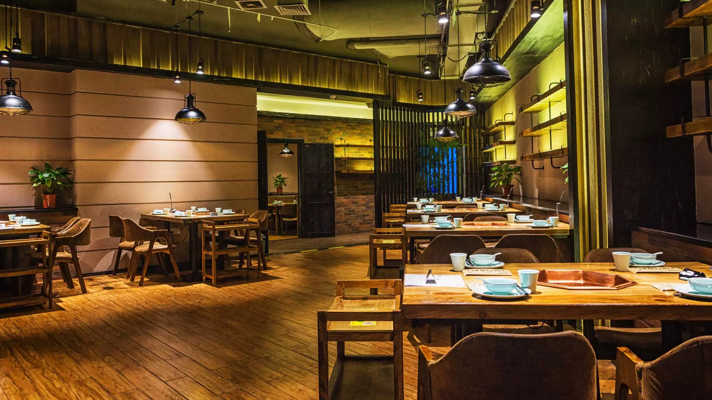
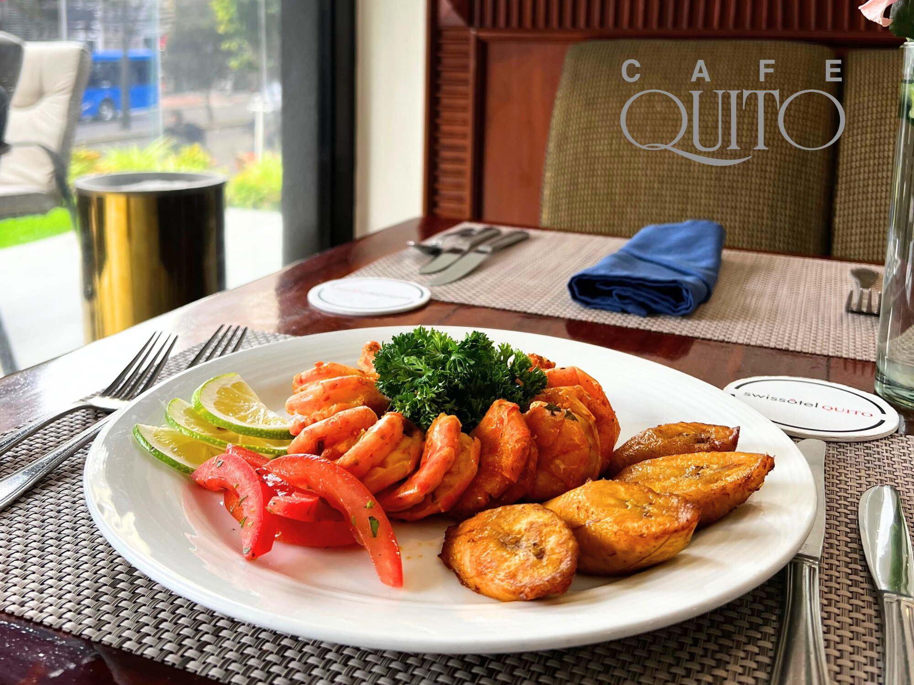
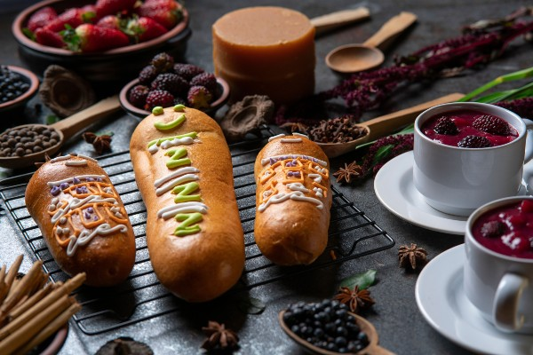
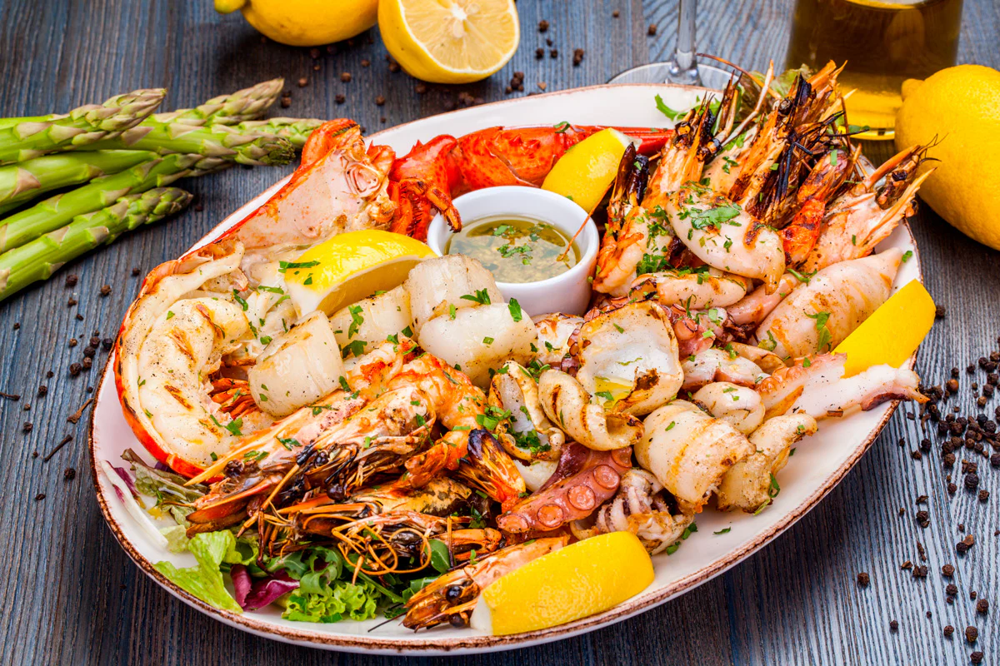

Sazu Restaurant
Nuestra Historia





Una Experiencia para Recordar
Sazu Restaurant nació con el objetivo de ofrecer una experiencia gastronómica única, combinando recetas tradicionales con ingredientes frescos y de alta calidad. Desde su apertura, ha buscado convertirse en un lugar especial para compartir momentos inolvidables con familiares y amigos.
Nuestra filosofía gastronómica se basa en la pasión por la cocina, el respeto por los ingredientes y la dedicación en cada plato. Creemos que una excelente atención al cliente y un ambiente acogedor son tan importantes como el sabor de cada preparación.
Con el paso de los años, Sazu Restaurant ha evolucionado incorporando nuevas propuestas culinarias y mejorando continuamente sus servicios. Nuestro compromiso es seguir innovando sin perder la esencia que nos caracteriza, ofreciendo siempre una experiencia memorable a cada visitante.